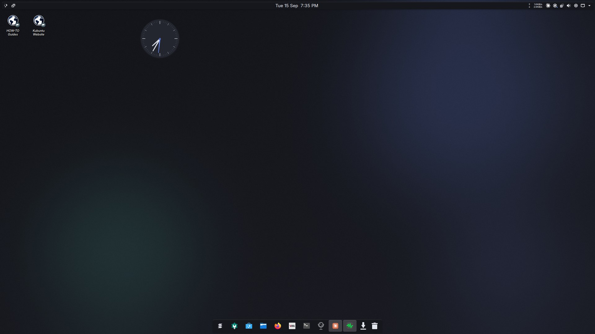
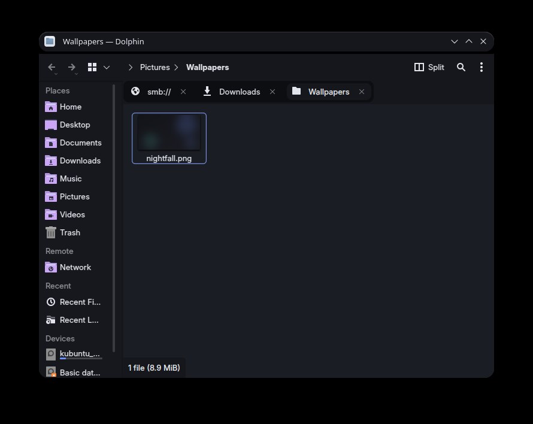
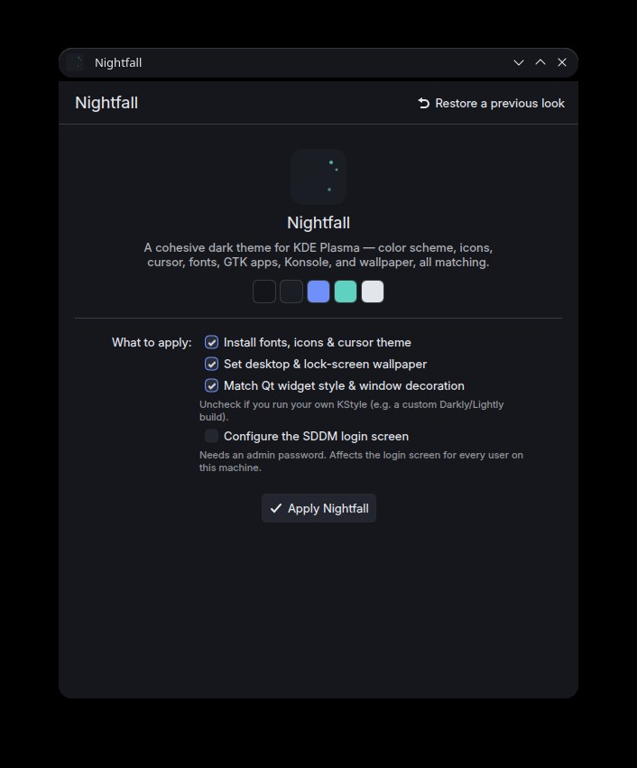

A cohesive dark theme for KDE Plasma — one deliberate design across your color scheme, icons, cursor, fonts, GTK apps, Konsole, and wallpaper, instead of a dozen half-matched defaults.

#14151A
#1B1D24
#6F8FFA
#5FD1C0
#E3E5EC
Nightfall doesn't stop at the desktop wallpaper. It applies one design system everywhere you look.
A full KDE color scheme, so every color-scheme-aware Qt app — even custom widget styles — picks it up automatically.
A clean, modern, actively maintained icon set that pairs well with almost any accent color.
Crisp, scalable SVG cursors that read cleanly against a dark desktop.
Inter for UI text, JetBrains Mono for anything fixed-width — including your terminal.
Firefox, GIMP, and every other GTK app get the matching dark theme, icons, cursor, and font — no separate config.
A matching color scheme and profile, set as your default automatically.
A generated abstract gradient built from the same palette — not a mismatched stock photo.
Reconfigure SDDM to match too, if you want it — off by default since it touches every user on the machine.
The desktop and the app that installs it — same palette throughout.


One file, no package manager required. Native packages are also available if you'd rather your package manager track it.
Download, make it executable, run it. That's the whole install.
# Download Nightfall-x86_64.AppImage above, then:
chmod +x Nightfall-x86_64.AppImage
./Nightfall-x86_64.AppImage
sudo apt install ./nightfall-gui_*.deb
sudo dnf install ./nightfall-gui-*.rpm
# or: sudo zypper install ./nightfall-gui-*.rpm
On Arch, Manjaro, or anything else — the AppImage above just works, no packaging needed.
It's free, open, and always will be. If it saved you some tinkering, a coffee is always appreciated — never required.
Buy me a coffee